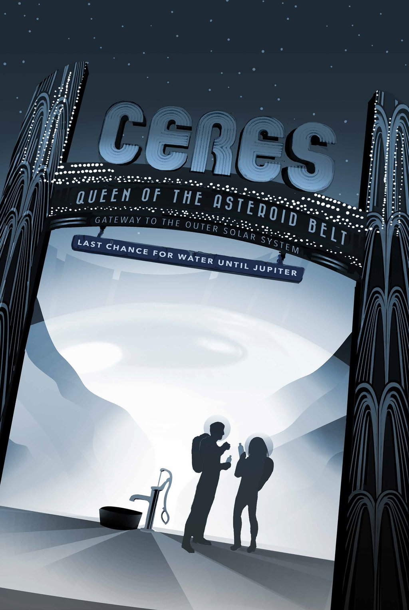

eres is the closest dwarf planet to the Sun. It is the largest object in the main asteroid
belt between Mars and Jupiter, with an equatorial diameter of about 965 kilometers. After being
studied with telescopes for more than two centuries, Ceres became the first dwarf planet to be
explored by a spacecraft, when NASA's Dawn probe arrived in orbit in March 2015. Dawn's ongoing
detailed observations are revealing intriguing insights into the nature of this mysterious world of
ice and rock.